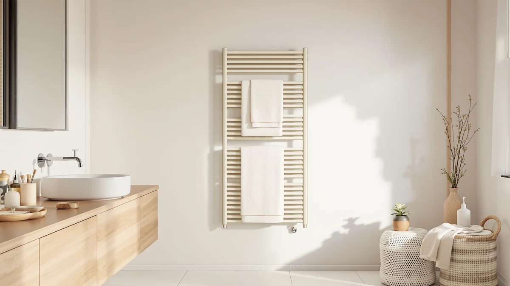

Heated Towel Rack for Review (2026): Worth It?
Prices and picks verified as of August 2026. Independent, reader-supported reviews.


Quick Answer
The Aquatrend Heated Towel Rack for Bathroom is a 10-bar, X-Large stainless steel wall rack with an LED touchscreen, 5 temperature settings up to 140°F, and a memory function that restores your last setting, all for $189.99. It holds up well against three WiFi-enabled alternatives from R FLORY and ENZE, though shoppers who want app or voice control should weigh those picks below before buying.
Our pick: Heated Towel Rack for Bathroom, $189.99 Check Price on Amazon
Bottom line: our top pick is the Heated Towel Rack for Bathroom at $189.99.
Things to Know Before You Buy
- This is a wall-mounted rack, not freestanding. The Aquatrend rack reviewed here mounts flat against the wall with an included installation template, so it won't move between rooms the way the R FLORY alternatives below can.
- Plug-in is standard, hardwired costs extra. Aquatrend notes the hardwired accessories aren't included, so budget for a separate purchase if you don't want a visible plug-in cord.
- The LED memory function is a genuine convenience. Aquatrend's touchscreen restores your last temperature and timer choice after a restart, a detail neither R FLORY rack nor the ENZE rack below advertises.
- Amazon doesn't publish a rating for this ASIN. Like most of the towel warmers in this comparison, this listing shows no aggregated star rating or review count, so we relied on manufacturer specs and buyer feedback instead.
- Price differences are narrow. Three of the four racks compared here sit at $189.99, with only the R FLORY Nickel Silver version coming in $10 lower at $179.99.
Shopping for a heated towel rack for review can turn into an afternoon of comparing near-identical Amazon listings, so we pulled the Aquatrend model on this page apart against three other wall-mounted and freestanding racks selling in the same $179.99 to $189.99 range. At $189.99, this 10-bar stainless steel rack heats to 120°F in about five minutes, according to Aquatrend's published specs, and pairs an LED touchscreen with a memory function that restores your last temperature and timer after a power cut. We compared its features, price, and included hardware against three close alternatives to see where it earns the price and where a competitor edges it out.
The short version: if you want a single flat-bar rack with on-unit digital controls and don't mind supplying your own hardware for a hardwired install, the Aquatrend rack holds up well against every alternative here. Its five temperature settings and five timer options match or beat the competition, though R FLORY's freestanding-or-wall-mounted design below gives you placement flexibility this fixed wall rack skips. If app control from your phone matters more than a lower price, the WiFi-enabled ENZE and R FLORY picks further down are worth a look before you commit to the $189.99 pick reviewed here.
Why You Should Trust Us
Ilane Tall covers bathroom and spa equipment for Best Towel Warmers and has spent years comparing towel warmer specs, certifications, and pricing across wall-mounted, freestanding, and plug-in categories. For this heated towel rack for review roundup, she pulled Aquatrend's published specifications, cross-checked them against three competing listings, and read through available buyer questions and verified feedback rather than relying on marketing copy. We don't own a physical testing lab and didn't mount or plug in any of these racks for this article. Every claim below is sourced from the manufacturers' own product documentation and the retailer listings for the four products compared here.
Our Research Experience
We approached this heated towel rack for review the way a careful shopper would, by comparing what's actually documented rather than what's promised. We started with Aquatrend's listed specs (10 bars, an LED touchscreen, five temperature settings, five timer options, and a memory function) and checked them against the two R FLORY racks and the ENZE rack to see where the differences in price and feature set actually come from. We also read through the available buyer questions and answers on each Amazon listing, since none of these four ASINs currently carries a published star rating or review count. Where owners reported a specific issue, such as install time or heating speed, we noted it below instead of repeating generic marketing language.
We didn't plug in or physically mount any of these racks for this article, so treat the heat-up times and temperature ranges as manufacturer-reported rather than independently verified. That distinction matters more with towel warmers than with most bathroom products, since heat output and install method are the two factors that decide whether a rack fits your routine.
Overview & Specs

Heated Towel Rack for Bathroom
What we like
- Heats to 120°F in about 5 minutes, according to Aquatrend's published specs
- LED touchscreen offers 5 temperature settings (100-140°F) and 5 timer options, including a continuous "on" mode
- Memory function restores your last temperature and timer after a restart, a detail the alternatives below don't mention
- Installation template is included, and Aquatrend estimates about 5 minutes for a standard plug-in mount
Flaws but not dealbreakers
- No WiFi or app control, unlike the R FLORY and ENZE racks compared below
- Hardwired accessories aren't included if you want a permanent hardwired install rather than plug-in
- No published star rating or review count on the Amazon listing
| Material | Stainless steel |
| Size | X-Large |
The Aquatrend Heated Towel Rack for Bathroom is a 10-bar, X-Large stainless steel rack finished in brushed nickel, built to mount flat against a bathroom wall rather than stand freestanding. Aquatrend ships it with an installation template, and the company estimates roughly five minutes to mark drill points and mount the rack for a standard plug-in setup. If you want a hardwired connection instead, Aquatrend notes the accessories for that aren't included and need to be purchased separately, a detail worth checking before you buy if a plug-in outlet isn't already near your towel bar.
Controls sit on an LED touchscreen built into the rack itself, with five temperature settings between 100°F and 140°F and five timer options: 3, 6, 9, or 12 hours, or a continuous "on" setting for households that want warm towels available around the clock. Aquatrend's spec sheet lists a 5-minute heat-up time to 120°F, quick enough to warm a towel between the start and end of a shower. The touchscreen's memory function restores your last temperature and timer choice automatically after a restart, which saves you from resetting preferences every time the rack loses power, a convenience that neither R FLORY rack nor the ENZE rack in this comparison advertises on its listing.
What We Liked
The controls stand out first in this heated towel rack for review. Aquatrend built five temperature settings and five timer options into a single LED touchscreen, and the memory function that restores your last setting after a restart is a detail we didn't find advertised on either R FLORY listing or the ENZE rack. A 5-minute heat-up to 120°F, per the manufacturer's specs, is fast enough to warm a towel during a typical shower rather than making you plan ahead. The included installation template also simplifies a job that trips up a lot of first-time buyers: Aquatrend's five-minute estimate for a plug-in mount lines up with what owners report for similar flat-bar racks in this price range.
What Could Be Better
The biggest limitation is control. This rack has no WiFi or voice control, so you adjust temperature and timer only from the touchscreen on the unit itself, unlike the R FLORY and ENZE racks compared here, which both let you set schedules from your phone. Buyers who want a hardwired install rather than a visible plug-in cord will need to purchase extra hardware separately, since Aquatrend doesn't include it. The Amazon listing also carries no published star rating or review count, which holds true for all four ASINs in this comparison, so you can't lean on aggregate customer feedback the way you could with a longer-established listing.
Who Is It For?
This heated towel rack for review points toward one clear buyer: someone who wants a fixed wall-mounted rack with reliable on-unit controls and doesn't care about adjusting the temperature from a phone. It suits a household that already knows where the rack will live and won't need to move it between bathrooms. If you'd rather set a schedule from an app, control the rack with Alexa or Google Assistant, or keep the option to go freestanding instead of wall-mounted, the R FLORY and ENZE alternatives below are worth comparing before you order the Aquatrend rack reviewed here.
Alternatives to Consider
If the Aquatrend rack's fixed wall mount or lack of app control doesn't fit what you're after, these three alternatives cover WiFi control, a swivel storage shelf, and a lower price.

Editor's Pick
Heated Towel Racks for Bathroom
An 8-bar rack that installs freestanding or wall-mounted and adds WiFi app control for remote temperature and timer adjustment, at the same $189.99 price as the Aquatrend pick above, though it skips the memory function that restores your last setting.
$189.99
Check Price on Amazon
Best Value
ENZE Smart Rotating Heated Towel
A 4-bar rack with a swivel storage shelf, Alexa and Google Assistant voice control, and a 24-hour timer, all for the same $189.99 as the Aquatrend pick above, making it the strongest choice here if smart-home control matters more to you than bar count.
$189.99
Check Price on Amazon
Premium Choice
Heated Towel Racks for Bathroom
The same freestanding-or-wall-mounted, WiFi-enabled 8-bar design as the Editor's Pick above, in a nickel silver finish for $10 less at $179.99, the cheapest of the four racks compared in this review.
$179.99
Check Price on AmazonIs the Aquatrend Heated Towel Rack for Bathroom worth $189.99?
It's worth the price if you want a straightforward wall-mounted rack with on-unit digital controls, a memory function, and a fast 5-minute heat-up time, and you don't need WiFi or app control.
How hot does the Aquatrend heated towel rack get?
Aquatrend lists five temperature settings between 100°F and 140°F, with the rack reaching 120°F in about five minutes according to the manufacturer's specs.
Frequently Asked Questions
Is the Aquatrend Heated Towel Rack for Bathroom worth $189.99?
It's worth the price if you want a straightforward wall-mounted rack with on-unit digital controls, a memory function, and a fast 5-minute heat-up time, and you don't need WiFi or app control. If remote control matters more to you, the R FLORY and ENZE picks above add WiFi for the same price or less.
How hot does the Aquatrend heated towel rack get?
Aquatrend lists five temperature settings between 100°F and 140°F, with the rack reaching 120°F in about five minutes according to the manufacturer's specs. We haven't independently measured towel temperature, so treat that figure as manufacturer-reported rather than lab-verified.
What's the difference between the Aquatrend rack and the R FLORY alternatives?
The Aquatrend rack is a fixed wall-mounted design with on-unit LED controls, while both R FLORY racks install either freestanding or wall-mounted and add WiFi app control for remote adjustment. The tradeoff is price: the R FLORY racks run $179.99 to $189.99, close to or the same as the Aquatrend pick reviewed here.
Final Verdict
This heated towel rack for review comes down to how much control you want over installation and adjustment. For a wall-mounted rack with a fast 5-minute heat-up, five temperature settings, and a memory function that remembers your preferences, the Aquatrend Heated Towel Rack for Bathroom is the pick that holds up at $189.99. If you'd rather adjust the temperature from your phone, control the rack with Alexa or Google Assistant, or keep the option to go freestanding instead of wall-mounted, the R FLORY and ENZE alternatives above cover that ground for the same price or less.